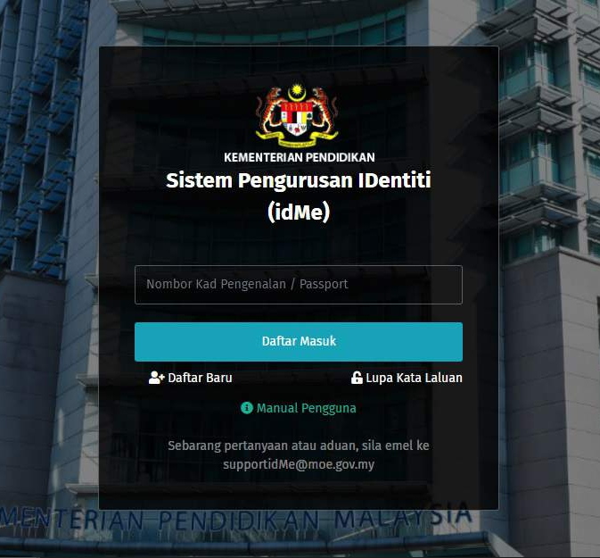
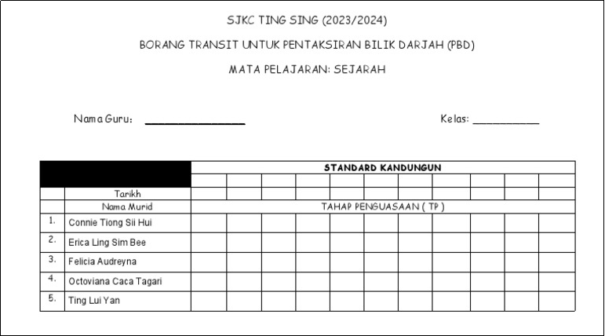

EDUP3153
Pentaksiran Dalam Pendidikan
Biodata

1.0 Pengenalan
Menurut Kementerian Pendidikan Malaysia (2019), Pentaksiran Bilik Darjah (PBD) ialah proses berterusan dalam pengajaran dan pembelajaran (PdP) untuk menilai perkembangan murid secara menyeluruh. Pernyataan ini disokong oleh McTighe dan Ferrara (2021) yang menjelaskan bahawa pentaksiran ini membantu guru mengenal pasti tahap penguasaan murid, membaiki cara mengajar serta memberi maklum balas yang berguna. Maklum balas ini amat penting agar murid dan ibu bapa peka terhadap kekuatan serta ruang yang perlu diperbaiki. Oleh itu, portfolio digital ini dihasilkan untuk merekod dan menilai pelbagai strategi pentaksiran alternatif serta kaedah perekodan yang digunakan oleh guru semasa Pentaksiran Bilik Darjah (PBD).
2.0 Strategi Pentaksiran Alternatif dalam Bilik Darjah
Pelaksanaan Pentaksiran Bilik Darjah menuntut guru untuk mempelbagaikan pendekatan penilaian formatif dan sumatif agar seiring dengan keperluan pedagogi Pembelajaran Abad Ke-21. Menurut Buku Panduan Pelaksanaan Pentaksiran Bilik Darjah, strategi pentaksiran alternatif amat penting bagi menilai dan menganalisis pemahaman, kemahiran dan nilai murni murid secara komprehensif (KPM, 2019). Pendekatan ini membolehkan guru menilai domain kognitif, psikomotor dan afektif murid secara bersepadu dalam situasi pembelajaran yang sebenar, sekali gus melepasi batasan peperiksaan bertulis tradisional yang hanya berpusatkan hafalan fakta.
2.1 Pembelajaran Berasaskan Projek (PBP)
Salah satu strategi alternatif yang berkesan untuk merangsang Kemahiran Berfikir Aras Tinggi (KBAT) murid ialah Pembelajaran Berasaskan Projek (PBP). Dalam pelaksanaannya, guru bukan sahaja menilai hasil akhir projek, tetapi juga memerhati keseluruhan proses kerja murid, bermula daripada fasa perancangan, pencarian maklumat, sehinggalah kepada fasa penghasilan produk. Misalnya, dalam mata pelajaran Sejarah, guru boleh memberikan tugasan kepada murid untuk menjalankan kajian kes tentang agama yang ada di Malaysia. Murid dikehendaki mengumpul pelbagai sumber primer dan sekunder, menganalisis amalan keagamaan serta peranan agama yang tertentu dalam membentuk nilai masyarakat serta menghasilkan dalam bentuk buku skrap fizikal. Sepanjang proses ini, guru berperanan sebagai fasilitator bagi menilai kemahiran bekerjasama dan kemahiran menyelesaikan masalah dalam kalangan kumpulan murid. Pendekatan ini selaras dengan panduan Kementerian Pendidikan Malaysia (2022) yang menyatakan bahawa pentaksiran dalam PBP dilaksanakan secara berterusan, iaitu pentaksiran proses dan pentaksiran produk, manakala guru pula bertindak sebagai fasilitator yang membimbing murid sepanjang projek dijalankan.
2.2 Pembentangan Lisan
Selain PBP, pembentangan lisan turut diaplikasikan sebagai medium penilaian yang interaktif. Bagi menjadikan pentaksiran ini lebih terperinci dan bermakna, guru boleh mengintegrasikan kaedah main peranan. Melalui kaedah ini, pentaksiran tidak terhad kepada kebolehan murid membaca nota di hadapan kelas, sebaliknya menilai kemahiran komunikasi dua hala, tahap keyakinan, dan komunikasi bukan lisan. Sebagai contoh praktikal, murid diberikan tugasan untuk mengkaji latar belakang perjuangan tokoh tempatan seperti Tok Janggut. Murid kemudiannya diminta membentangkan dapatan mereka dengan memakai kostum ringkas dan menjiwai emosi tokoh tersebut semasa berhujah. Semasa pembentangan, guru dapat menilai sejauh mana kelancaran bahasa dan intonasi murid. Lebih penting lagi, sesi soal jawab kognitif yang dikendalikan oleh guru pada akhir pembentangan membolehkan tahap pemikiran spontan murid diuji, di samping mentaksir tahap empati sejarah mereka seperti mana yang dihasratkan dalam Dokumen Standard Kurikulum dan Pentaksiran (DSKP) Sejarah yang menekankan bahawa kemahiran empati perlu dipupuk dalam kalangan murid bagi membolehkan mereka memahami peristiwa sejarah dengan lebih bermakna (KPM, 2015).
2.3 Pemerhatian
Selanjutnya, pemerhatian berterusan merupakan strategi pentaksiran autentik yang paling berkesan untuk menilai domain afektif murid yang sukar diukur melalui instrumen bertulis. Pendekatan ini selaras dengan dapatan kajian Che Aleha Ladin (2015) yang menyatakan bahawa kaedah pemerhatian merupakan salah satu strategi pentaksiran autentik yang dapat menilai penguasaan pelajar secara menyeluruh meliputi domain kognitif, afektif dan psikomotor. Pemerhatian ini dilaksanakan secara terancang oleh guru semasa murid sedang terlibat dalam aktiviti pengajaran dan pembelajaran (PdP). Guru akan bergerak dari satu kumpulan ke kumpulan lain untuk meneliti dinamika kumpulan, cara murid menyelesaikan konflik, dan reaksi emosi mereka secara semula jadi. Sebagai contoh, guru merancang aktiviti simulasi bagi peristiwa pengisytiharan kemerdekaan Tanah Melayu pada tahun 1957. Semasa simulasi ini berjalan, guru memfokuskan pemerhatian terhadap cara murid berinteraksi, mempamerkan sikap toleransi antara kaum dan menterjemahkan semangat patriotisme dalam lakonan mereka.
3.0 Kaedah Perekodan
Selain strategi pentaksiran, kaedah perekodan juga merupakan aspek yang sangat signifikan dalam Pentaksiran Bilik Darjah (PBD) bagi memastikan setiap perkembangan murid didokumentasikan dengan sistematik. Dalam urusan rekod PBD, kebanyakan guru menggunakan kedua-dua kaedah iaitu secara 'online' dan 'offline'. Gabungan ini dibuat setelah mengambil kira kelebihan dan kekurangan supaya proses pentaksiran di sekolah berjalan lancar.
3.1 Perekodan Secara Atas Talian

Kementerian Pendidikan Malaysia (KPM) telah memperkenalkan Sistem Bersepadu KPM (MOEIS) bagi memudahkan pengurusan maklumat murid, guru, dan sekolah. Tambahan pula, sistem idMe adalah repositori utama bagi menyimpan dan mengesahkan semua maklumat berkenaan sesebuah institusi pendidikan. Oleh itu, pendaftaran menggunakan idMe perlu dilalui oleh guru untuk mengakses MOEIS.
Kelebihan kaedah dalam talian ini, data pentaksiran boleh diakses dari mana-mana dengan sambungan internet, membolehkan guru dan pentadbir untuk mengakses maklumat secara fleksibel. Selain itu, penggunaan perisian pengurusan pembelajaran atau platform e-pembelajaran membolehkan penggunaan secara automatik untuk mengumpul, menganalisis, dan melaporkan data pentaksiran. Tambahan lagi, pelbagai format penilaian boleh disokong, termasuk ujian dalam talian, tugasan digital, dan refleksi pelajar dalam bentuk digital seperti e-Portfolio.
Walau bagaimanapun, keberkesanan sistem ini sangat bergantung kepada kestabilan internet. Sebarang gangguan talian atau masalah teknikal boleh menghambat urusan guru untuk merekod data pentaksiran dengan lancar.
3.2 Perekodan Tanpa Online

Borang transit merupakan pilihan alternatif untuk merekod PBD secara luar talian. Melalui borang ini, guru dapat memantau tahap penguasaan murid terhadap objektif pembelajaran dengan lebih jelas, sekali gus memudahkan perancangan tindakan susulan. Segala maklumat yang dicatatkan akan dipindahkan ke dalam templat pelaporan rasmi sebagai bukti pelaksanaan PBD.
Kaedah manual ini biasanya digunakan apabila terdapat gangguan pada sistem idMe. Kelebihan utamanya ialah kaedah ini tidak memerlukan talian internet, menjadikannya sangat praktikal bagi kawasan yang mempunyai capaian terhad. Selain itu, guru mempunyai kawalan sepenuhnya terhadap data tanpa perlu bergantung kepada platform digital. Cara ini juga lebih mesra pengguna bagi guru yang kurang mahir dengan teknologi.
Namun demikian, penggunaan borang fizikal mempunyai cabaran tersendiri, terutamanya dari segi ruang penyimpanan yang terhad jika data terlalu banyak. Selanjutnya, proses berkongsi maklumat dengan pihak pentadbir menjadi kurang fleksibel kerana guru perlu mencetak atau menghantar dokumen secara manual. Oleh itu, guru perlu bijak memilih kaedah perekodan yang paling sesuai agar tugas harian tidak menjadi terbeban.
4.0 Analisis Kritikal Pelaksanaan Pentaksiran Alternatif
Pelaksanaan pelbagai strategi pentaksiran alternatif berserta kaedah perekodan yang komprehensif membawa implikasi yang signifikan terhadap amalan pendidikan masa kini. Walau bagaimanapun, setiap instrumen penilaian ini perlu dianalisis secara kritikal dari sudut keberkesanan pedagogi, cabaran pelaksanaannya di dalam bilik darjah, serta sejauh mana instrumen tersebut mampu menjamin keadilan dan ketelusan terhadap setiap murid yang ditaksir.
4.1 Implikasi Positif terhadap Perkembangan Holistik Murid
Dari sudut keberkesanan, pengintegrasian strategi seperti Pembelajaran Berasaskan Projek (PBP), pembentangan lisan dan pemerhatian tingkah laku telah berjaya membawa anjakan paradigma terhadap pentaksiran tradisional. Pendekatan ini bukan sekadar menguji daya ingatan murid, tetapi turut menyediakan platform autentik untuk menilai pelbagai kecerdasan mereka secara bersepadu. Sebagai contoh, pentaksiran tidak lagi bergantung kepada satu jawapan yang mutlak, sebaliknya menghargai kepelbagaian idea dan kreativiti murid dalam menyelesaikan masalah. Menurut Kementerian Pendidikan Malaysia (2019), kepelbagaian kaedah pentaksiran ini amat bertepatan dengan hasrat Falsafah Pendidikan Kebangsaan untuk melahirkan modal insan yang seimbang dari segi intelek, rohani, emosi dan jasmani, selain mempersiapkan mereka bagi mendepani cabaran dunia sebenar.
4.2 Cabaran Kesahan dan Subjektiviti dalam Pemarkahan
Meskipun memberikan impak yang positif, pelaksanaan pentaksiran alternatif tidak terlepas daripada isu dan cabaran yang kritikal, terutamanya yang melibatkan kebolehpercayaan dan kesahan skor pemarkahan. Berbanding dengan ujian objektif yang mempunyai skema pemarkahan yang tetap, penilaian terhadap kualiti buku skrap, tahap kelancaran komunikasi atau penghayatan nilai sivik sangat bergantung kepada pertimbangan profesional guru. Sekiranya pertimbangan ini tidak dipandu oleh instrumen perekodan yang piawai, wujud risiko berlakunya ketidakadilan. Guru juga terdedah kepada kecenderungan melakukan ralat penilaian seperti kesan halo iaitu kecenderungan penilai dipengaruhi oleh tanggapan peribadi atau reputasi awal seseorang, bukan berdasarkan prestasi sebenar mereka (Thorndike, 1920; Nor Azuanee & Mohd Asri, 2024). Dalam konteks pentaksiran bilik darjah, kesan ini berlaku apabila markah murid dipengaruhi oleh kesan pertama guru terhadap murid tersebut, bukannya berdasarkan prestasi sebenar mereka semasa tugasan dilaksanakan.
4.3 Pemantapan Etika dan Ketelusan Penilaian
Bagi menghadapi cabaran subjektiviti dan ralat penilaian, amalan pentaksiran yang menjunjung tinggi nilai etika, kejujuran, dan keadilan perlu dibudayakan secara tuntas oleh setiap pendidik. Proses penilaian mestilah dikendalikan secara telus, objektif dan bebas daripada sebarang berat sebelah. Di sinilah instrumen seperti sistem idMe dan borang transit bertindak sebagai mekanisme semak dan imbang yang berkesan. Berdasarkan pandangan McTighe dan Ferrara (2021), rubrik yang diedarkan lebih awal dapat mewujudkan kontrak ketelusan antara guru dengan murid kerana kriteria kejayaan telah dimaklumkan secara jelas. Selain itu, perekodan secara berstruktur memastikan guru memberikan skor berdasarkan bukti yang nyata, bukan semata-mata berdasarkan andaian. Apabila amalan pentaksiran yang beretika ini diamalkan dengan penuh integriti, profil pencapaian murid yang terhasil bukan sahaja sah, malah kebolehpercayaannya dapat dipertahankan di hadapan mana-mana pihak berkepentingan.
5.0 Kesimpulan
Secara tuntasnya, pelaksanaan Pentaksiran Bilik Darjah (PBD) menerusi pendekatan alternatif merupakan nadi kepada transformasi sistem pendidikan kebangsaan selaras dengan keperluan pedagogi Pembelajaran Abad Ke-21 (PAK-21). Pengaplikasian strategi seperti Pembelajaran Berasaskan Projek (PBP), pembentangan lisan, dan pemerhatian tingkah laku telah membuktikan bahawa potensi murid boleh ditaksir secara holistik dan dinamik, melampaui metodologi peperiksaan bertulis yang tegar. Walau bagaimanapun, keberkesanan strategi tersebut amat bergantung kepada penggunaan kaedah perekodan yang sistematik seperti sistem idMe dan borang transit. Melalui amalan pentaksiran yang berpegang teguh pada prinsip keadilan, ketelusan, dan etika profesional, guru dapat mengelakkan sebarang ralat penilaian yang berunsurkan berat sebelah. Akhir kata, selari dengan gagasan McTighe dan Ferrara (2021), pentaksiran yang dilaksanakan secara objektif dan berasaskan bukti yang nyata akan dapat menjana maklum balas yang bermakna. Maklum balas inilah yang akan menggilap potensi sebenar setiap murid, seterusnya merealisasikan hasrat Falsafah Pendidikan Kebangsaan untuk melahirkan generasi yang seimbang, berdaya saing, dan berakhlak mulia.
Rujukan
Che Aleha Ladin (2015). Pentaksiran berasaskan sekolah Pendidikan Seni Visual sekolah menengah. Tesis Ijazah Doktor Falsafah, Universiti Pendidikan Sultan Idris (UPSI).
https://ir.upsi.edu.my/sw_inc/doc.php?t=p&did=1686&id=10388123
Kementerian Pendidikan Malaysia. (2015). Dokumen Standard Kurikulum dan Pentaksiran (DSKP) Sejarah Tahun 5. Bahagian Pembangunan Kurikulum.
Kementerian Pendidikan Malaysia. (2019). Panduan Pelaksanaan Pentaksiran Bilik Darjah Edisi ke-2. Bahagian Pembangunan Kurikulum.
Kementerian Pendidikan Malaysia. (2022). Modul Pembelajaran Berasaskan Projek. Bahagian Pembangunan Kurikulum.
McTighe, J., & Ferrara, S. (2021). Assessing student learning by design: Principles and practices for teachers and school leaders. Teachers College Press.
Nor Azuanee Mukhtar, & Mohd Asri Mohd Noor. (2024). Teachers' performance appraisal: The reality of unified evaluation for education services officer implementation in Malaysian primary schools. International Business Education Journal, 17(1), 26–37.
https://doi.org/10.37134/ibej.Vol17.1.3.2024
Thorndike, E. L. (1920). A constant error in psychological ratings. Journal of Applied Psychology, 4(1), 25–29.
https://web.mit.edu/curhan/www/docs/Articles/biases/4_J_Applied_Psychology_25_(Thorndike).pdf